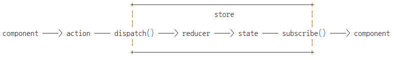

Redux 코딩 순서
0. Redux 플러그인 추가 or import.
1. state 만들기
2. reducer 만들기
3. store 만들기
4. action 만들기
5. store 구독하기
6. store에 action dispatch 하기
<div>
<input type="button" value="+" onClick={this.handlerClickIncrement} />
<input type="button" value="-" onClick={this.handlerClickDecrement} />
<div>
{counter}
</div>
</div>
